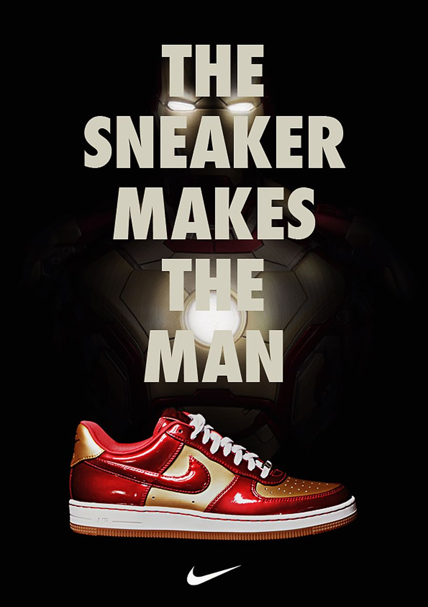
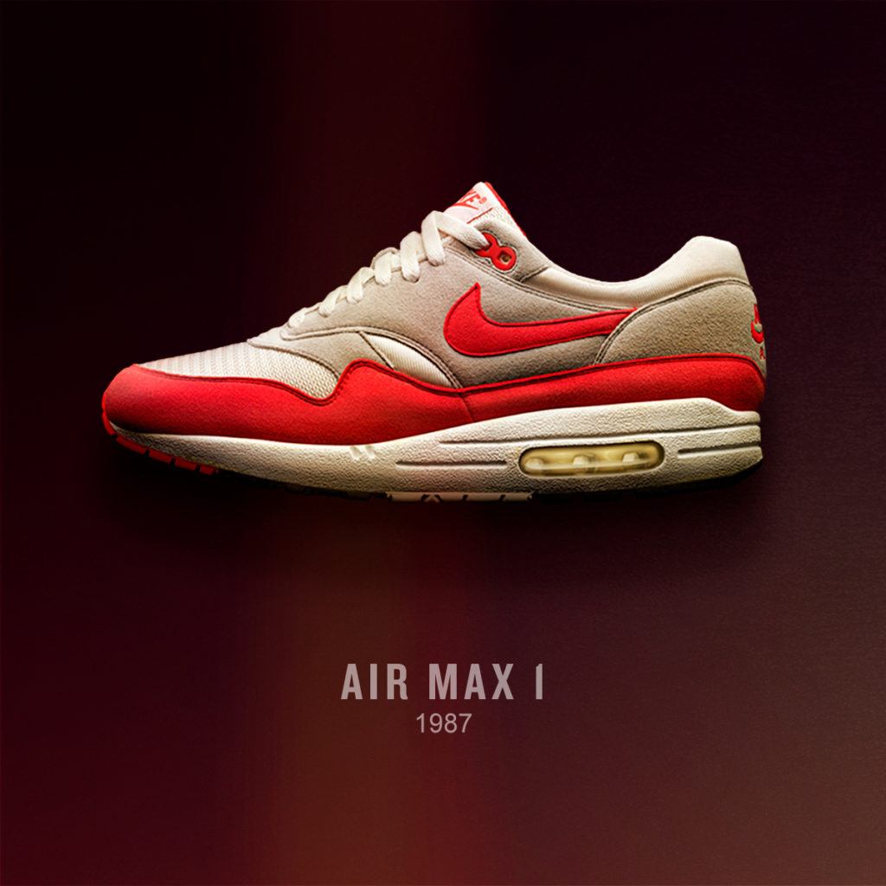
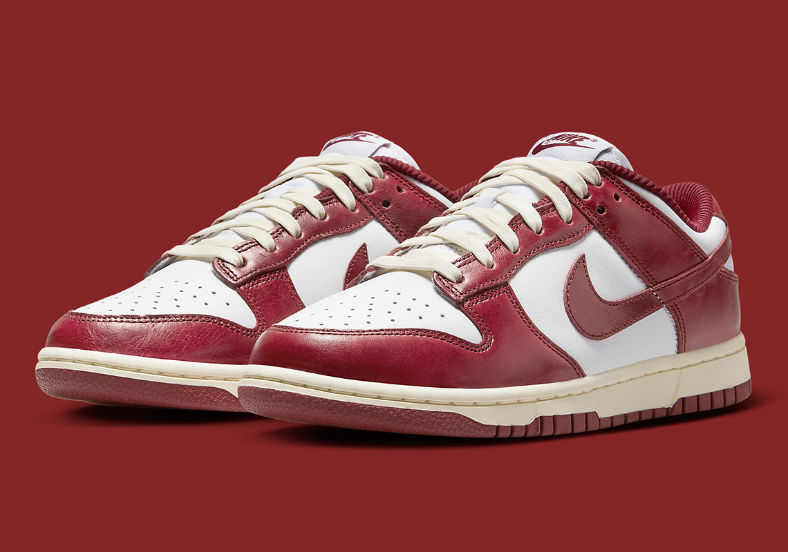

Обувки
Air Force 1
- Наречени на самолета на американския президент – директна асоциация с власт и статус.
- Стават неофициална „униформа“ в хип-хоп културата и нюйоркските квартали.
- Един от малкото модели, които никога не излизат от производство.

Air Max
- Видимият Air първоначално е смятан за технически риск и дизайнерска грешка.
- Дизайнът е вдъхновен от архитектурата на центъра „Помпиду“ в Париж.
- Air Max Day се превръща в глобално културно събитие, не просто продуктова дата.

Dunk
- Първоначално създадени за колежански баскетбол, а не за улична мода.
- Превзети от скейт културата, въпреки че не са проектирани за скейтборд.
- Един от моделите с най-голямо поскъпване на вторичния пазар.

Running / Performance
- Pegasus е един от най-дълго произвежданите модели в историята на бягането.
- Тези обувки се разработват чрез биомеханични тестове и лабораторни данни.
- Технологиите от бягането по-късно се прехвърлят към лайфстайл моделите.